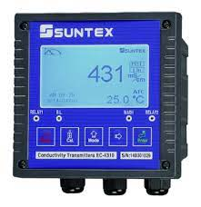

EC-4310
Extreme performance for wide range applications
The EC-4310 series conductivity transmitter has rugged IP 65 enclosure and outstanding EMC protection ability. Wide measurement range up to 2000mS/cm, high resolution up to 0.001μS/cm, and equipped with salinity and TDS modes, all these functionalities enable its versatile ability in more application fields with the consistent reliability reliability
Features:
- Measurement range up to 2,000 mS/cm, resolution up to 0.001μS/cm
- Back-lit LCM display with graphical menu
- EC-4310 series with setting & last cal. info overview
- EC-4310 series with setting & last cal. info overview
- Two limited ON/OFF contact output
- Equipped with TDS, Salinity mode
- Password protection

- Ultra-pure water
- Desalination
- Cooling water
- Chemical process
- Scrubber
- Wastewater